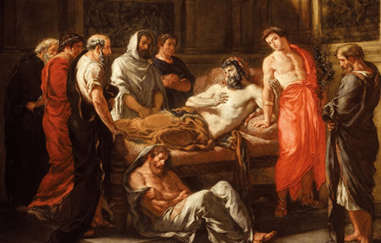
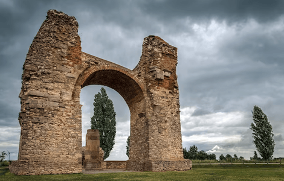
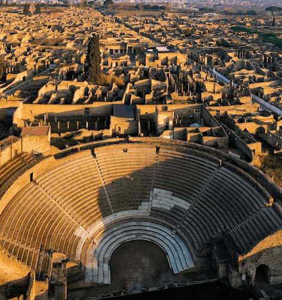

NATIONAL GEOGRAPHIC
What were Marcus Aurelius' rules for life His self-help classic has the answers
HISTORY & CULTURE
- 
- 
- 
The second-century A.D. world of Emperor Marcus Aurelius was in shambles. A great plague ravaged western Europe, as he embarked on a long and bloody war against the Germanic tribes along the Danube frontier. Faced with these woes, along with old age and thoughts of death, the emperor sought comfort in philosophy.
Throughout his life, notably at odd moments during the military campaign, he jotted down his personal struggles, philosophical beliefs, and insights about being a better ruler and a person. Out of this sincere expression of introspection came 12 books contemplating life and the human condition. In total this collection is called Meditations.
Philosopher emperor
CLEAN, CLOSE SHAVE - Born in A.D. 121 into an aristocratic family in Rome, Marcus Aurelius received an excellent education in rhetoric and philosophy. He studied Greek and quoted freely from Homer and Euripides. Perhaps that’s why he wrote his Meditations in Greek rather than Latin, the Roman Empire’s official language.
As a youth, he also became deeply interested in philosophy, particularly Stoicism, a school of thought that flourished in antiquity. One of its key tenets emphasizes the development of inner strength and the acceptance of things beyond one’s control. Founded in Athens by Zeno of Citium around 300 B.C., Stoicism grew to become one of the leading philosophies of the ancient world.
On Monday, March 22, 2015, as Richard’s coffin was received by Leicester Cathedral in preparation for reburial, Channel 4 TV presenter Jon Snow asked a Tudor historian for the evidence of Richard’s murder of the Princes in the Tower. “The evidence,” the historian replied, “is that he would have been a fool not to do it.”
It flourished in ancient Rome, counting Cicero among its leading scholars (and a good source of information on Stoicism in Rome). Epictetus, a formerly enslaved Greek, became a highly influential Stoic philosopher studied by Marcus Aurelius. In fact, Meditations bears some resemblance to Epictetus’s collection of moral precepts, called Enchiridion (Manual).
With gratitude
The work starts as a kind of reckoning in which Marcus Aurelius gives thanks to all those who positively influenced him throughout his life. For example, he credits his tutors for keeping him from superstition and vice and turning him toward a more austere and virtuous life. The most important of these tutors, he remembers, was Quintus Junius Rusticus, who corrected his impetuous character and introduced him to the Stoic philosophers.
Marcus Aurelius also reminisces about his life at the court in Rome, where he arrived at age 17. His adoptive father, then emperor Antoninus Pius, maintained a modest lifestyle, and so the young Marcus Aurelius was not thrust into a world of sumptuous clothes and luxurious living; he didn’t even have a personal guard. The future emperor admired the dedication with which his adoptive father managed the empire and his calm but decisive personality.
Marcus Aurelius ascended to the throne in A.D. 161, co-ruling with his adoptive brother Lucius Verus until Lucius’s death, in 169. While Marcus Aurelius doesn’t reflect directly about his life as an emperor, he touches on important related topics, including the weight of his responsibilities and the need to uphold justice. He recognizes that he must make decisions in the best interest of the people he governs. He writes: “Begin each day by telling yourself: Today I shall be meeting with interference, ingratitude, insolence, disloyalty, ill will, and selfishness ... None of these things can injure me, for nobody can implicate me in what is degrading.”
He recognizes that power can be a burden and a temptation, emphasizing the importance of avoiding arrogance and maintaining humility in the face of authority. He also offers insights on how to cope with difficult situations, maintain inner tranquility, and remain focused on one’s purpose in the face of obstacles.
Comments :
- john Very good
- john Very good
Leave a Reply
Your email address will not be published. Required fields are marked*
Related posts:
-
 Travel Italy's Most Scenic Stretch of Coastline
Travel Italy's Most Scenic Stretch of CoastlineThe Amalfi Coast is the playground of the social elite and well-heeled, but don’t let that throw you. The Italians love kids and this area puts everyone at close quarters.
View article -
 Get Off the Tourist Track in Havana
Get Off the Tourist Track in HavanaTo get an inside glimpse of daily life for the average Cuban, you and your kids should skip the hotels and stay in one of the hundreds of casas particulares sprinkled throughout Havana, the Cuban equivalent of B&Bs
View article -
 Why a Trip to New York is a Rite of Passage
Why a Trip to New York is a Rite of PassageFor a first trip, stick with Manhattan, the classic microcosm of the world. There’s no major influence, theme, subject, attraction, or trend that in some way isn’t touched or reflected in the work, play, creativity
View article